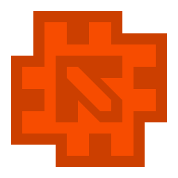

SharpCraftLauncher
一个轻量，迅速，简洁的 Minecraft 启动器
详情下滑...
SharpCraftLauncher
首页
下载
完美出场
这是一个使用 Rust 编程语言开发的第三方 Minecraft 启动器。以跨平台，高性能，低内存占用为目标。
功能强大
启动器的基本功能我们都会提供给你：
启动游戏
游戏下载
修改启动内存/参数
三种主流登录方式：离线，Mojang，Microsoft
同时启动器的独特特点也定能让你眼前一亮：
仿 Fluent Design 的简洁 UI
使用镜像下载源（BMCLAPI 或 MCBBS）
百万并发级异步下载
更好的启动器主题自定义能力
安装 Curseforge 模组包
还有更多...
性能优越
借由 Rust 语言简洁又不失性能的强大好处，启动器不论是性能还是内存都能控制在极低水平。
借助 Rust 的百万并发级别的异步编程，即使只有一个线程，下载带宽也能完全利用，即刻跑满，快速下载游戏。
制作缘由
目前的 Minecraft 第三方启动器技术栈中，使用 C# 和 Java 进行开发的启动器居多。 而其中的原因自然是其程序设计简单且能够提供更加华丽的软件页面。 但是也正因为如此，诸多问题也不断显现：启动自身速度缓慢，自身内存占用高，某些甚至可以比拟早期版本的 Minecraft。 也就是出于要改变低配置用户的不堪，更快的进入 Minecraft，这个项目便出现了。
下载
目前启动器仍在制作中，正式版发布之前将使用内测方式发放内测版本，你可以通过在爱发电赞助来获得内测版本的启动器。
Copyright © SteveXMH 2020-2021
Github
Afdian